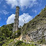

Arecibo Observatory
Stewarded by U.S. National Science Foundation since the 1970s, Arecibo Observatory has contributed to scientific discoveries including the demonstration of gravitational waves from a binary pulsar and the first discovery of an extrasolar planet. In 2020, Arecibo Observatory's 305-meter telescope collapsed. Information about the collapse and NSF's efforts to address the damage and restore other parts of the observatory can be found on this page. Reporters with questions should contact NSF's Media Affairs team at media@nsf.gov or 703-292-7090.
Latest Updates
10/13/22
The U.S. National Science Foundation issued a solicitation Oct. 13 for a new multidisciplinary, world-class educational center at the Arecibo Observatory in Puerto Rico that aims to serve as a hub for STEM education and outreach.
The center would expand upon existing education and outreach opportunities currently in place at the Arecibo Observatory site, while also implementing new STEM programs and initiatives. The new center is expected to open in 2023.
The scientific community has expressed broad support for an expanded educational facility. Specifically, the 2020 Decadal Survey for Astronomy and Astrophysics, or Astro2020, recognized that the observatory has, over the course of its nearly 60-year history, become a highly regarded part of the community for many of Puerto Rico's citizens, serving as a source of pride and local economic benefit while also providing access to training and employment for many in the community. Astro2020 called out support for its continuation as an important nexus for education, community, and developing a diversified STEM workforce.
The goals of the center would be to:
- Promote STEM education, learning, and teaching.
- Support fundamental and applied STEM and STEM education research.
- Broaden participation in STEM.
- Build and leverage existing and new collaborations and partnerships.
The center would have four primary functions aligned to its goals:
- Engage the public in STEM through education and outreach activities.
- Develop and implement a research and workforce development program.
- Support participation of individuals from underrepresented groups in STEM education and research.
- Cultivate and build authentic partnerships within and outside of Puerto Rico.
The solicitation calls for proposals to manage the education, STEM research, and outreach aspects of the center. Resources available on site include: a learning center, the Ángel Ramos Science and Visitor's center, exhibition space, laboratory space, auditorium, cafeteria, office space, and dormitories. A third-party contractor will be responsible for maintenance of the site resources listed above, in addition to grounds maintenance.
NSF program directors will work with awardees that have ongoing NSF-funded activities at the Arecibo Observatory to ensure continuity of programs. The solicitation does not include rebuilding the 305-meter telescope or operational support for current scientific infrastructure, such as the 12-meter radio telescope or Lidar facility. Teams seeking to utilize existing scientific infrastructure or proposing for new projects can submit proposals that are complementary to the scope of the new center. All proposals will go through the standard NSF merit review process. Interested parties are advised to contact a NSF program director in their program area to discuss the proposal prior to submission.
This new educational center opportunity is consistent with guidance provided in the "CHIPS and Science Act". The act "encourages the National Science Foundation, in consultation with other Federal agencies, to explore opportunities for strengthening and expanding the role of the Arecibo Observatory in Puerto Rico through education, outreach, and diversity programs, and future research capabilities and technology at the site."
The solicitation is available.
La Fundación Nacional de Ciencias (NSF, por sus siglas en inglés) emitió una solicitud el 13 de octubre invitando propuestas para la creación de un nuevo centro educativo multidisciplinario de clase mundial en el Observatorio de Arecibo en Puerto Rico, el cual tendría como objetivo servir como un centro para la educación y divulgación de las disciplinas STEM (ciencia, tecnología, ingeniería y matemáticas).
El centro tendría como objetivo ampliar las oportunidades de educación ya existentes en el Observatorio de Arecibo, y al mismo tiempo implementaría nuevos programas e iniciativas de STEM. El nuevo centro abriría sus puertas en el 2023.
La comunidad científica ha expresado un amplio apoyo a la creación de un centro educativo en dicha localidad. La Encuesta Decenal de Astronomía y Astrofísica de 2020, o Astro2020, reconoció que el observatorio, a lo largo de sus casi 60 años de historia, se ha convertido en una parte muy querida de la comunidad de Puerto Rico, sirviendo como fuente de orgullo y beneficio económico local, al mismo tiempo que brinda empleo y capacitación para muchos en la comunidad. Astro2020 expresó apoyo para la creación de este centro como un nexo importante para la educación, la comunidad y el desarrollo de una fuerza laboral de STEM diversificada.
Los objetivos del centro serían:
- Promover la educación, el aprendizaje y la enseñanza de las disciplinas STEM.
- Fomentar investigaciones fundamentales y aplicadas en STEM, e investigaciones sobre la educación de las disciplinas STEM.
- Ampliar la participación en STEM.
- Crear nuevas y/o fortalecer colaboraciones y asociaciones ya existentes.
El centro tendría cuatro funciones principales alineadas con sus objetivos:
- Involucrar al público en STEM a través de actividades educativas y de divulgación.
- Desarrollar e implementar un programa de investigación y desarrollo de la fuerza laboral.
- Fomentar la participación de grupos subrepresentados en la educación y la investigación de STEM.
- Cultivar y construir alianzas auténticas dentro y fuera de Puerto Rico.
La solicitud invita propuestas para la gestión y manejo de los aspectos de educación, investigación de STEM y divulgación del centro. Los recursos ya disponibles en el sitio incluyen: un centro de aprendizaje, el Centro de Ciencias y Visitantes Ángel Ramos, espacio para exposiciones, espacio para laboratorio, auditorio, cafetería, espacio para oficinas y dormitorios. Un contratista externo será responsable del mantenimiento de estos recursos además del mantenimiento de los terrenos.
NSF trabajará con los adjudicatarios que tienen actividades en curso financiadas por la NSF en el Observatorio de Arecibo para asegurar la continuidad de dichos programas. Cabe aclarar que la solicitud de propuestas no incluye la reconstrucción del telescopio de 305 metros ni el apoyo operativo para la infraestructura científica actual, como el radiotelescopio de 12 metros o la instalación Lidar. Los equipos y/o investigadores que deseen utilizar la infraestructura científica existente o proponer nuevos proyectos pueden presentar propuestas que sean complementarias a las funciones del nuevo centro educativo. Todas las propuestas serán evaluadas por el proceso de revisión de méritos de la NSF. Se les recomienda a las partes interesadas que se comuniquen con un director de programa de la NSF en su área de interés para analizar la propuesta antes de enviarla.
Esta nueva oportunidad del centro educativo coincide con las instrucciones proporcionada por la "Ley CHIPS y Ciencia". La ley "alienta a la Fundación Nacional de Ciencias, en consulta con otras agencias federales, a explorar oportunidades para fortalecer y expandir la función del Observatorio de Arecibo en Puerto Rico a través de programas de educación, divulgación y diversidad, y futuras capacidades de investigación y tecnología en el sitio".
La solicitud está disponible en.
08/11/22
The Thornton Tomasetti Forensic Investigation into the collapse of the 305-meter Telescope at the Arecibo Observatory is now available
04/11/22
The Arecibo Observatory Salvage Survey Committee (AOSSC), chartered by the University of Central Florida (UCF) and the U.S. National Science Foundation (NSF) has posted their report following the conclusion of the salvage activities.
03/07/22
Visitor's Center Reopening
The Ángel Ramos Foundation Science and Visitors Center at the Arecibo Observatory will reopen to the public on March 10. Visitors are welcomed Wednesdays through Sundays from 9:00 a.m. to 3:30 p.m. but must make reservations online.
A new outdoor exhibit was added with artifacts recovered from the telescope and its platform. In addition, visitors will be able to access the observation deck and see where the telescope once stood. The rest of the AO facility remains closed to the public.
A short public ceremony will be held at 10 a.m. inside the Science and Visitors Center Auditorium. During the ceremony, some of the science investigations carried out at AO and the many educational opportunities available will be shared.
Visitors are welcome, but they must reserve a date and time to visit through the online store. Spaces are limited so an appointment is essential to secure your space. Guests will not be allowed to enter without an appointment. Visitors must also comply with the following guidelines:
- Reservations must be made in advance at https://www.naic.edu/shop
- Everyone 5 years-old or older must bring and wear a mask at all times
- Guests must show proof of vaccination when they arrive
- Use hand sanitizer
- Maintain physical distance during the visit
The temperature of each person will be taken at the entrance. Anyone with a temperature of 100.4 F (38 C) or higher will not be able to enter, nor will anyone in their party. Anyone without a mask will not be allowed inside and no masks will be provided.
The University of Central Florida manages the NSF facility under a cooperative agreement with Universidad Ana G. Méndez and Yang Enterprises, Inc.
Observatory Status Cleanup is complete. Scientists and engineers on site continue to work on existing instrumentation, such as the 12-meter telescope, the optical facility and the lidar facility, and they are continuing to analyze and publish the large amount of data that already existed at the time of the 305m telescope collapse. In addition to the studies conducted on the single socket where the first failure occurred, there are two independent broader studies being carried out now. We expect to learn of their findings later this year.
12/01/21
Fact Sheet: Arecibo Observatory Update

Arecibo Imagery
The latest images are available for download
11/17/21
The U.S. National Science Foundation, University of Central Florida, Arecibo Observatory, and a team of contractors have nearly completed the emergency cleanup activities at the Observatory.
Correction: The November 2021 report, entitled "Update on Arecibo Observatory Emergency Cleanup" contained an error with regard to the estimated number of damaged panels that had been removed from the reflector. The estimate has been corrected in this updated report:
- Update on Arecibo Observatory Emergency Cleanup (November 2021, Updated Dec 2021)
La Fundación Nacional de las Ciencias de los EE. UU., la Universidad de la Florida Central, el Observatorio de Arecibo, y un equipo de contratistas ya han completado casi todas las actividades de limpieza de emergencia en el Observatorio. Por favor vea el siguiente informe para una actualización de las medidas de protección ambiental y la conservación histórica:
Corrección: El informe de noviembre de 2021, titulado "Actualización del Observatorio de Arecibo Limpieza de Emergencia" contenía un error en referencia al número estimado de paneles dañados que fueron removidos del reflector. Dicho estimado ha sido corregido en este informe actualizado:
- Actualización del Observatorio de Arecibo Limpieza de Emergencia (Noviembre 2021, Actualizado en dic 2021)
06/28/21
The U.S. National Science Foundation, University of Central Florida, Arecibo Observatory, and a team of contractors continue to perform emergency cleanup activities at the Observatory. Please see the following report for an update on environmental protection measures and historic preservation:
La Fundación Nacional de las Ciencias, la Universidad de la Florida Central, el Observatorio de Arecibo, y un equipo de contratistas continúan llevando a cabo actividades de limpieza en el Observatorio. Por favor vea los siguientes informes para una actualización de las medidas de protección ambiental y la conservación histórica:
05/13/21
UPDATE: On May 11, 2021, at approximately 9:00 a.m. one of the trucks used to collect debris from the 305-meter telescope at the Arecibo Observatory made contact with power lines and internet cables while en route to the Observatory. The incident interrupted power and internet service for hours. While the trucks being used to transport the debris related to the December collapse of the 305-meter telescope at the Arecibo Observatory are well within the legal limits for height, there are several areas along the transportation route that present challenges for clearing power lines and internet cables. These areas are located along the secondary roads between the town of Arecibo and the Arecibo Observatory. The Arecibo Observatory team is actively evaluating this situation and will take the immediate step of placing spotters en route to attempt to avoid future contact with power lines and internet cables during the remainder of the debris removal effort, which is nearing the end.
El 11 de mayo de 2021, aproximadamente a las 9:00 a.m., uno de los camiones que transportaba los escombros del Observatorio de Arecibo hizo contacto con las líneas eléctricas y cables de Internet mientras se dirigía al Observatorio. El incidente interrumpió los servicios de electricidad y Internet durante varias horas. Los camiones que se utilizan para transportar los escombros están dentro de los límites legales de altura, sin embargo, hay varias áreas a lo largo de la ruta de transporte que presentan desafíos para despejar las líneas eléctricas y los cables de Internet. Estas áreas están ubicadas a lo largo de las rutas secundarias entre el centro del pueblo de Arecibo y el Observatorio El equipo del Observatorio de Arecibo está evaluando activamente esta situación y colocará personal en las rutas, encargados de observar, para intentar evitar el contacto futuro con líneas elóectricas y cables de Internet durante el resto del proceso de remoción de escombros, el cual está llegando a su fin.
04/26/21
The Transportation Plan has been updated to reflect a change to the truck route. See here for a map of the revised route.
04/16/21
The Transportation Plan has been updated to reflect a minor change to the route on the highway side; there is no change to the route through the residential areas.
El plan de transporte ha sido actualizado para reflejar un cambio en la ruta correspondiente a la autopista; no se hizo ningún cambio a la ruta en las zonas residenciales.
03/31/21
Registration is now available for online attendance of a public meeting on anticipated truck traffic related to debris removal from the Arecibo Observatory. The meeting, hosted by The National Science Foundation (NSF), University of Central Florida (UCF) and the Arecibo Observatory (AO) will be held April 5 at 6:00 p.m., AST.
Use this link to register in advance for the webinar. If you have any issues, please contact Arecibo-feedback@nsf.gov. After registering, you will receive a confirmation email containing information about joining the webinar.
On March 15, 2020, crews began transporting a small number of loads carrying debris from the Arecibo Observatory to a recycling facility. The number of loads carrying debris will increase during the first week of April and continue through June 2021, or shortly thereafter. All debris is from the December 2020 collapse of its 305-meter telescope. The removal will advance the ongoing cleanup activities as the National Science Foundation (NSF), which owns the Observatory, and the University of Central Florida (UCF), which operates it, work to restore remaining capabilities to operations.
Information about the debris removal, including the full transportation plan is available on NSF’s website. Members of the community with questions about the transportation plan can contact Arecibo-feedback@nsf.gov. Members of the media should contact NSF at media@nsf.gov or 703-292-7090.
Why is this material being removed? Initial removal of materials from the Observatory will create staging areas for additional cleanup work at the site. Later removal of materials will be for long-term cleanup; disposal will include recycling for as much of the material as possible. Material potentially useful for future scientific operations will be retained and samples important for the ongoing forensic investigation to more fully understand the cause of the collapse will be kept on-site. A salvage survey committee, which includes representatives from Arecibo Observatory, the Smithsonian Institution and universities in Puerto Rico, is screening debris to identify objects for potential scientific reuse, cultural or historic value, or possible display at the site or other museums. See information about historic preservation at the Observatory for more information.
How and when will it be removed? The materials will be moved via hauling trucks, 40-60 yard trailers, all of which have integrated tarps to cover each load. Transportation of materials and work vehicles can be expected Mondays-Saturdays between 7 a.m. and 4 p.m. with peak traffic between 9 a.m. and 3 p.m. We anticipate hauling debris and returning to Arecibo each day. It is estimated work for this part of the project will continue through June or shortly thereafter.
What kinds of materials will be removed? Materials removed from the site will include soil as well as scrap metal and concrete, mostly from the telescope’s instrument platform and its supporting structure.
Will this create traffic? Hauling of materials is not expected to create any significant increase in local traffic. Transportation is expected to involve 3-4 trucks making approximately two round-trips per day, departing the Observatory intermittently, not large convoys (maximum four trucks).
Will this involve road closures or detours? No. The transportation plan involves only a small number of trucks per day operating in normal traffic.
Could this damage roads? This work is not expected to have any negative impact. NSF and UCF are coordinating with local officials to address any potential issues.
How noisy will this be? This work is not expected to generate significant noise beyond the sound of 3-4 trucks making approximately two round-trips per day, as the loading of debris will take place on the Arecibo Observatory site.
What do I do if I see debris in the road, on my property or elsewhere? Call or text 787-246-4200 for assistance and the debris will be retrieved. Do not attempt to remove debris yourself, as it may be heavy or have sharp edges.
Where is the debris going? The material will be hauled to recycling facilities and landfills in Puerto Rico.
Is any of this material being transported hazardous? No. The materials have been tested and identified as non-hazardous waste. Soil that was affected by a release of hydraulic fluid during the collapse of the dish has already been excavated and will be removed from the Observatory through a separate process. Workers will continue to test all materials identified for disposal.
Why can’t this work be done at night? For the safety of our drivers and community members living alongside the steep road to Arecibo, it is necessary to do the work in the daytime. The curvy, steep and narrow road poses an additional hazard at night.
Why remove this material? Could it be sold or archived? The materials being removed are mostly pieces of the 305-meter telescope’s suspended platform. As such, much of the debris is bulky and jagged. NSF and UCF are screening debris during the sorting process in order to retain materials that could be of use in science operations and any objects of potential historical importance. See information about historic preservation at the Observatoryfor additional information on the salvage process.
Is Arecibo Observatory open? The Observatory is only open to approved operations and scientific staff, and to the workers performing cleanup, environmental and historical assessment duties. This debris transportation process is part of the effort to fully reopen the Observatory, including the Visitor Center, to the public as soon as possible.
El 15 de marzo de 2020, los equipos comenzaron a transportar una pequeña cantidad de cargas con escombros desde el Observatorio de Arecibo a una facilidad de reciclaje. La cantidad de cargas que transportan escombros aumentará durante la primera semana de abril y continuará hasta junio de 2021, o poco después. Todos los escombros son del colapso de diciembre de 2020 de su telescopio de 305 metros. La remoción avanzará las actividades de limpieza en curso, ya que la Fundación Nacional de las Ciencias (NSF), propietaria del Observatorio, y la Universidad de la Florida Central (UCF), que lo opera, trabajan para restaurar las capacidades restantes y poder operarlas.
La información sobre la remoción de los escombros, incluyendo el plan de transportación completo, está disponible en la página de internet de NSF. Los miembros de la comunidad que tengan preguntas sobre el plan de transportación pueden comunicarse a través de Arecibo-feedback@nsf.gov. Los miembros de los medios de comunicación deben comunicarse con NSF a través de media@nsf.gov ó al 703-292-7090.
¿Por qué se está removiendo este material? La remoción inicial de materiales del Observatorio creará áreas de preparación para trabajos de limpieza adicionales en el sitio. La remoción posterior de materiales será para limpieza a largo plazo; la disposición incluirá el reciclaje de la mayor cantidad posible de material. Se conservará el material potencialmente útil para futuras operaciones científicas y se mantendrán en el lugar muestras importantes para la investigación forense en curso para comprender mejor la causa del colapso. Un comité de inspección de salvamento, que incluye a representantes del Observatorio de Arecibo, la Institución Smithsonian y universidades en Puerto Rico, está revisando los escombros para identificar objetos de potencial científico para su posible reutilización, y artículos de valor cultural o histórico que se conservarán para su posible exhibición en el sitio u otros museos. Vea la información sobre la preservación histórica en el Observatorio para más información.
¿Cómo y cuándo se eliminará? Los materiales se moverán a través de camiones de transporte, remolques de 40 a 60 yardas, todos los cuales tienen lonas integradas para cubrir cada carga. Se puede esperar el transporte de materiales y vehículos de trabajo de lunes a sábado entre las 7 a.m. y las 4 p.m. con tráfico pico entre las 9 a.m. y las 3 p.m. Anticipamos transportar escombros y regresar a Arecibo todos los días. Se estima que el trabajo para esta parte del proyecto continuará hasta junio o poco después.
¿Qué tipo de materiales se removerán? Los materiales removidos del sitio incluirán suelo, chatarra y hormigón, principalmente de la plataforma de instrumentos del telescopio y su estructura de soporte.
¿Esto creará tráfico? No se espera que el transporte de materiales genere un aumento significativo en el tráfico local. Se espera que el transporte involucre de 3 a 4 camiones haciendo aproximadamente dos viajes de ida y vuelta por día, saliendo del Observatorio de manera intermitente, no como grupos grandes (máximo cuatro camiones).
¿Esto implicará cierres de carreteras o desvíos? No. El plan de transporte involucra solo una pequeña cantidad de camiones por día operando en el tráfico normal.
¿Podría esto dañar las carreteras? No se espera que este trabajo tenga ningún impacto negativo. NSF y UCF se están coordinando con los funcionarios locales para atender los problemas potenciales.
¿Qué tan ruidoso será esto? No se espera que este trabajo genere un ruido significativo más allá del sonido de 3-4 camiones que realizaran aproximadamente dos viajes de ida y vuelta por día, ya que la carga de escombros se llevará a cabo en el sitio del Observatorio de Arecibo.
¿Qué hago si veo escombros en la carretera, en mi propiedad o en otro lugar? Llame o envíe un mensaje de texto al 787-246-4200 para obtener ayuda y se recuperarán los escombros. No intente quitar los escombros usted mismo, ya que pueden ser pesados o tener bordes afilados.
¿A dónde van los escombros? El material será transportado a facilidades de reciclaje y vertederos en Puerto Rico.
¿Alguno de este material transportado es peligroso? No. Los materiales han sido probados e identificados como desperdicios no peligrosos. El suelo que fue afectado por una liberación de fluido hidráulico durante el colapso del plato ha sido excavado y será retirado del Observatorio en cargas separadas. Los trabajadores continuarán muestreando todos los materiales identificados para su disposición.
¿Por qué no se puede hacer este trabajo de noche? Para la seguridad de nuestros conductores y miembros de la comunidad que viven junto a la empinada carretera hacia Arecibo, es necesario hacer el trabajo durante el día. La carretera con curvas, empinada y estrecha representa un peligro adicional durante la noche.
¿Por qué remover este material? ¿Podría venderse o archivarse? Los materiales que se están removiendo son en su mayoría piezas de la plataforma suspendida del telescopio de 305 metros. Como tal, muchos de los escombros son voluminosos e irregulares. NSF y UCF están examinando los escombros durante el proceso de clasificación para retener materiales que podrían ser de utilidad en operaciones científicas y cualquier objeto de posible importancia histórica. Vea la información sobre la preservación histórica en el Observatorio para obtener información adicional sobre el proceso de salvamento.
¿Está abierto el Observatorio de Arecibo? El Observatorio solo está abierto al personal de operaciones y científico autorizado, así como a los trabajadores que realizan tareas de limpieza, evaluación ambiental e histórica. Este proceso de transporte de escombros es parte del esfuerzo para reabrir el Observatorio, incluido el Centro de Visitantes, al público lo antes posible.
03/25/21
Engineering firms operating at the site of the Arecibo Observatory’s collapsed 305-meter telescope have produced a transportation plan for the removal of debris. The plan will be discussed at an April 5 public meeting, accessible in-person or virtually. See below for details. The plan's executive summary is also available in Spanish.
The National Science Foundation (NSF), University of Central Florida (UCF) and the Arecibo Observatory (AO) will be hosting a public meeting to inform the local community of anticipated truck traffic related to debris removal from the Arecibo Observatory. Interested members of the public are invited to attend the meeting.
The public meeting will be held April 5 at 6:00 p.m., AST, both virtually and in-person.
Location: Colegio de Ingenieros y Agrimensores de Puerto Rico, Capítulo de Arecibo
Paseo Los Olmos, Arecibo, PR 00612
The meeting will be held in both Spanish and English. COVID-19 protocols will be followed during the in-person meeting, including temperature checks. Attendees must wear a mask or face covering, practice six-foot social distancing at all times, and use hand sanitizer as preventive measures.
La Fundación Nacional de las Ciencias (NSF, por sus siglas en inglés), la Universidad de la Florida Central (UCF, por sus siglas en inglés) y el Observatorio de Arecibo (AO, por sus siglas en inglés) estarán llevando a cabo una reunión pública para informar a la comunidad local sobre el tráfico de camiones anticipado debido a la remoción de escombros del Observatorio de Arecibo. Se invita a los miembros del público interesados a asistir a la reunión.
La reunión pública se llevará a cabo el lunes, 5 de abril a las 6:00 PM, tanto en persona como de manera virtual.
Lugar: o Colegio de Ingenieros y Agrimensores de Puerto Rico, Capítulo de Arecibo
Paseo Los Olmos, Arecibo, PR 00612
La reunión se llevará a cabo en inglés y en español. Se seguirán los protocolos de COVID-19 durante la reunión en persona, incluyendo la toma de temperatura. Los asistentes deben llevar mascarilla o cubierta de cara, practicar 6 pies de distanciamiento social en todo momento y utilizar desinfectante de manos como medidas preventivas.
03/11/21
New Workshop Dear Colleague Letter
- NSF has posted a Dear Colleague Letter advising the research community of a planned workshop focused on finding actionable and innovative ways to support, broaden, and strengthen the radio science community across all of Puerto Rico and to create or enhance opportunities for science and educational and cultural activities and public outreach at the Arecibo Observatory.
Environmental Cleanup and Historic Preservation
- Ensuring safety has continued to be NSF's top priority. This includes not only the safety of personnel on the site, but also the safety of the environment in the area. NSF, the University of Central Florida (UCF), and a team of contractors that includes environmental specialists have been working since the December 1st collapse to communicate with regulatory agencies and to identify environmental compliance requirements, including those related to pollution prevention, sampling and analysis, and biological resources.
- Cleanup work has included soil sampling and excavation to remove soil impacted by hydraulic oil released during the collapse, as well as the development and implementation of plans for the sampling and analysis of soil, groundwater, and surface water and a Stormwater Pollution Prevention Plan to prevent sediment and pollutants from migrating offsite. Biologists are conducting wildlife and vegetation surveys to inform protection measures relating to species of concern.
- NSF and UCF continue their work to address concerns about historical and cultural preservation. NSF has been in contact with the Puerto Rico State Historic Preservation Office (PR SHPO) and the Advisory Council on Historic Preservation (ACHP) since the day of the collapse to consult on the protection and preservation of historically important elements of the structures and site. NSF will continue to provide ACHP with updates.
- Recognizing that there is interest in preserving identifiable remains of the contributing resources of the historic district as well as scientific equipment that could be reused, at NSF's direction, UCF has established the Salvage Survey Committee tasked with screening the debris to identify objects of potential scientific, cultural, or historic value to be preserved for potential display at the site or other museums.
- More information on Environmental Cleanup can be found on NSF's Environmental Cleanup and Historic Preservation site.
03/03/21
- NSF has provided a report to Congress, as required by the report language accompanying the Consolidated Appropriations Act, 2021, describing "the causes and extent of the damage, the plan to remove debris in a safe and environmentally sound way, the preservation of the associated AO facilities and surrounding areas, and the process for determining whether to establish comparable technology at the site, along with any associated cost estimates." The investigation of the collapse and exploration of future opportunities for Arecibo is ongoing. Read the report here.
Press Releases
Engineering Reports
Fact Sheets
Multimedia Resources
Video Footage of Collapse Arecibo Observatory
305-meter telescope collapsing, release 12/03/20. See captioning and crediting information here.
Video B-Roll footage of Pre Collapse Arecibo Observatory
NSF Arecibo Update Media Briefing Audio and Transcript
Media briefing on Dec 3, 2020 Download Transcript
NSF Arecibo Decommissioning Media Briefing Audio and Transcript
Media briefing on Nov 19, 2020 Download Transcript